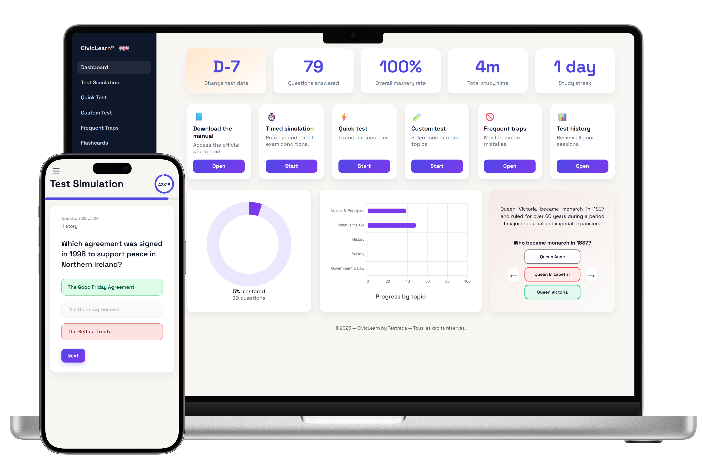

Life in the UK Test: Prepare online, with clarity and confidence.
Practise with questions built from the official Life in the UK handbook. Build strong habits, track progress, and arrive ready for test day.

Source: GOV.UK
Everything you need to be ready
Practice questions, exam-style sessions, and a clean, focused revision experience.
Handbook-based content
Practice questions aligned with the official Life in the UK handbook, covering history, values, institutions and everyday life.
Realistic practice sessions
Train with exam-style practice and instant feedback, so you can see what needs work and improve steadily.
Confidence on test day
Revise at your pace, reduce stress, and go into the test with a calm, prepared mindset.
Try Life in the UK Test-style questions for free
Get a feel for the format and level.
Everything included, for life
Lifetime access. Pay once, practise as long as you need.
Start nowNo subscription · Instant activation
What you get
- 1300+ practice questions
- Exam-style practice sessions
- Topic-based revision modes
- Frequently missed questions tracking
- Detailed progress statistics
- Audio reading support
- Flashcards
- Study guide
- Works on phone, tablet, and desktop
- Daily practice test
- Instant activation after payment
They prepared for the Life in the UK Test with the platform
“Doing a little practice every day helped massively. By the time I took the test, the question style felt familiar and I was much less nervous.”
“The topic practice made it easy to spot weak areas and focus revision. Clear layout, useful tracking, and no wasted time.”
“I started a few weeks before my appointment. The structure kept me consistent, and the practice sessions made me feel properly ready.”
More reviews of CivicLearn on Trustpilot.
Questions about preparing for the Life in the UK Test
Anything else? Write to us.
How long do I keep access?
Access is permanent. You pay once and can return any time, whenever you want to revise again.
Are these the exact questions from the real test?
The official test questions are not published as a fixed list. Our questions follow the official handbook topics and reflect the style and level candidates can expect.
Is there an official list of questions to memorise?
No single official list exists. The test covers a broad set of topics, so structured practice is the best way to prepare thoroughly.
How does the platform help me improve?
Topic practice, repeat training on difficult questions, and progress tracking help you strengthen knowledge over time and build confidence for test day.
Do I need to install an app?
No. It runs directly in your browser on mobile, tablet, or desktop.
What if I can’t revise every day?
Short sessions and your history make it easy to stay consistent even with limited time. You can quickly see what to revisit next.
Ready to pass the Life in the UK Test?
Hundreds of practice questions, exam-style sessions and progress tracking in one place. £19, once.
 Windows
Windows
 macOS
macOS
 Android
Android
 iPhone / iPad
iPhone / iPad
 Chrome
Chrome
 Safari
Safari
 Firefox
Firefox